Download for MacHand a task to a loop. It plans, splits the work into child loops that code and review each other in parallel, merges them back as they land, and opens the pull request. You stay in the loop only when it needs you.
Projects
acmeMA · Invoice edge cases
Changes · since last checkpoint
src/billing/invoice.ts +21 −12Steps grouped by the files they touch run in isolated worktrees. Each codes, gets reviewed, and fixes its findings alone. The first to settle merges back and can trigger a replan. Whatever it unblocked starts at once. There is no barrier, only landings.